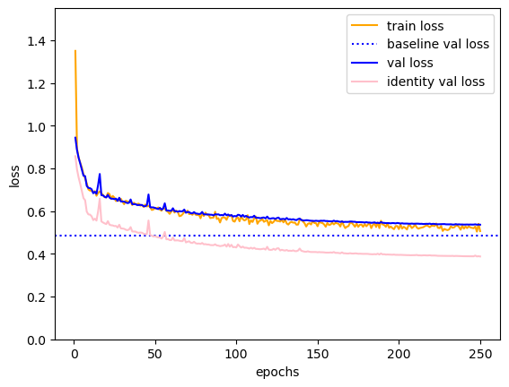

Summary
Zoonotic disease are infectious illnesses transmitted from animals to humans. Spillover is when a disease isolated to one species begins infecting another. The range of species a virus can infect (host plasticity) is directly related to its potential to spillover to humans. Thus, predicting a virus’s host range can grant insight into which disease may become zoonotic, helping forecast potential outbreaks and supporting surveillance efforts.
Host-virus interactions can be represented through biological networks. Graph Neural Networks can be applied to such graphs to predict missing edges. Our project focuses on predicting previously unknown relationships between bird hosts and known viruses through the application of GNNs by treating the challenge as an edge-prediction problem.
First, we created three datasets related to avian-virus interactions. One included known bird-virus interactions, one contained traits of avian hosts, and one contained traits of the avian viruses. We use an autoencoder to generate better representations of the input viral and host traits. We then create a heterogenous graph with two classes of nodes, viruses and hosts, whose node features are the encodings from the autoencoder. Edges are created for any interactions noted in the data.
From here, we set up a transductive link prediction task where the edges, along with sampled negative edges, are randomly split into train, validation, and test groups. The model is comprised of a series of GraphSAGE convolutional layers. For each link, the model takes the dot product between the final encodings of the corresponding virus and host nodes.
We applied this model to both a pre-existing mammal-virus interactions dataset and our constructed avian-virus dataset.
Results
Mammalian-virus interactions
Mammalian-virus dataset host autoencoder loss
Mammalian-virus dataset virus autoencoder loss
Mammalian-virus dataset GNN learning curve
Mammalian-virus dataset ROC
Mammalian-virus dataset Precision-Recall Curve
Avian-virus interactions
Avian-virus dataset host autoencoder loss
Avian-virus dataset virus autoencoder loss
Avian-virus dataset GNN learning curve
Avian-virus dataset ROC
Avian-virus dataset Precision-Recall Curve
Predicted missing links
The following table contains the top 5 predicted missing links. For each predicted interaction, we analyzed the average distance of the novel host to the known hosts of a virus and the average distance of the novel host to the rest of the avian species. For three of the top five predicted interactions, the novel host was closer to the known hosts than to other species in the dataset. This indicates that these hosts are evolutionarily similar, supporting that these are reasonable new virus-host interactions.
| Score | Virus Taxid | Virus Name | Host Taxid | Host Name | Avg. Distance to known Hosts | Avg. Distance to Other Species |
|---|---|---|---|---|---|---|
| 0.9731 | 468380 | Avipoxvirus isolate PM9 | 176066 | Myiopsitta monachus | 159.33 | 156.40 |
| 0.9726 | 911324 | Fowl adenovirus HR2 | 30387 | Netta rufina | 161.44 | 185.58 |
| 0.9724 | 1081806 | Chicken parvovirus 399/HRV/2010 | 241588 | Poicephalus gulielmi | 207.11 | 156.79 |
| 0.9720 | 1294111 | Avipoxvirus isolate Pennsylvania | 2811340 | Diomedea sanfordi | 169.90 | 171.41 |
| 0.9719 | 1330070 | Melegrivirus A | 116992 | Gracula religiosa | 207.11 | 150.39 |
Each relationship was also manually investivated by searching for occurences of each virus and their novel host through academic papers and news articles. For four of the novel host-virus interactions, past academic papers and news articles have linked viruses in the same family as affecting similar bird species. For example, Avipoxvirus has been recorded in Laysan Albatross, which suggests it could reasonabily also infect Diomedea sanfordi (Northern royal albatross).
Conclusion
This method of utilizing GNNs for link predicting shows promise for being applied to virus-host interactions for both mammalian and avian datasets. This problem is important to detect possible areas of disease spillover and inform surveillance efforts. This has applicability to humans, as they are mammals. An opportunity for future improvement is combining the mammalian and avian datasets into one model, allowing for predicting spillover of avian viruses to mammals and mammalian viruses to birds. This would further allow for predicting avian viruses to humans.
Project Links
Final Report: Delayed due to Overleaf being down. Will update as soon as possible.
Poster: https://docs.google.com/presentation/d/1qcZ_j0ULtPpBrWIYISo7vO4cVjJDuyY9w5qu5Qu0LaA/edit?usp=sharing
Github Repository: https://github.com/gdriskill/zoonotic-diseases
Source code tar file: https://github.com/gdriskill/zoonotic-diseases
People